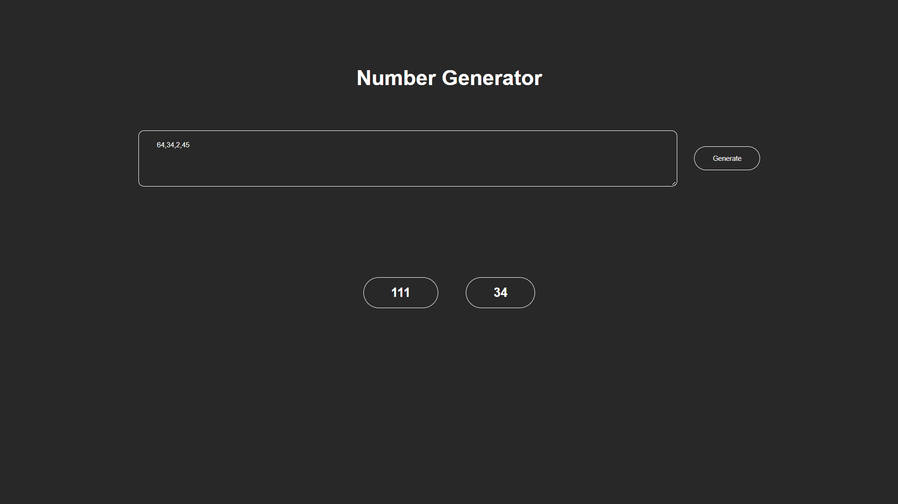
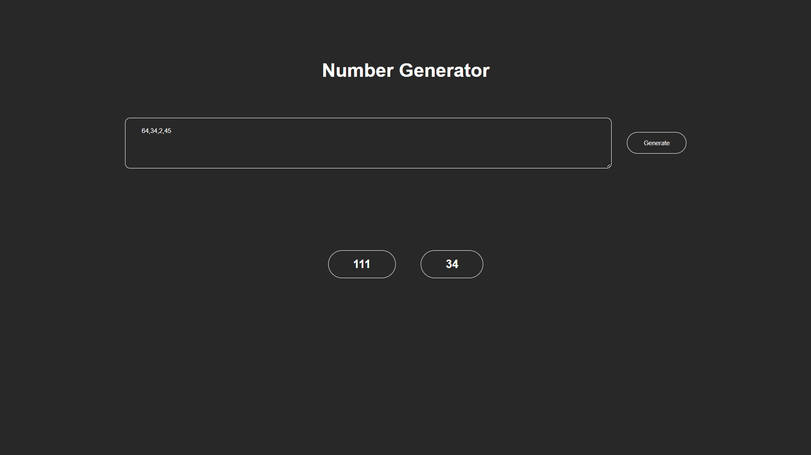
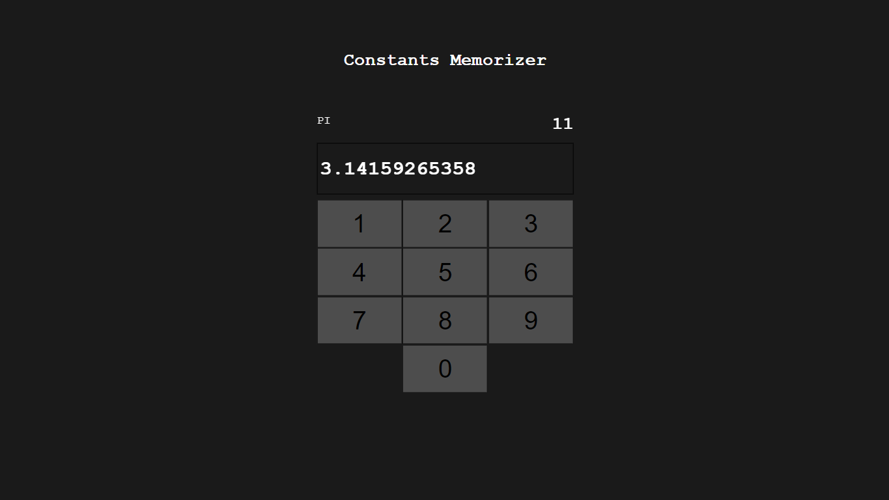
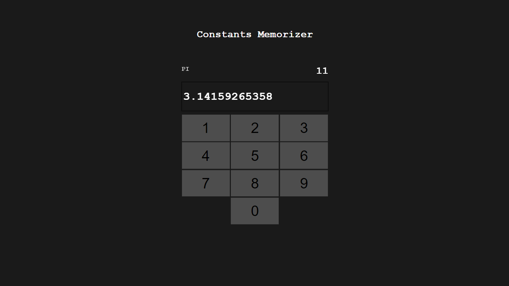

PROJECTS
THESE ARE MY LATEST PROJECTS
Color Palette
Color Palette is a website to create and download a palette of colors in the browser. Add as much colors as you want or delete them. With just a click all the colors and the hex values are downloaded to your computer. Thanks to David for the styling and the help. Click on the image and try it out or check the code on github.
PRNT SCREENSHOT FINDER
The Website prnt.sc is a very popular website for sharing screenshots. Many people don't consider that the screenshots are available for everyone through the generated link. With this website you can find screenshots by only a click. There are 3 sections Random, Link and Loop. Be careful some images contain nudity or scam. When you want to use the Loop function you must allow pop-ups in your browser. Click on the image and try it out or check the code on github.


WORDLE WORDS
The popular game Wordle is played by millions every day. Because I am not a native English speaker i often had quite some trouble to find a word matching the letters I already figure out. So, I built a website where you enter the letters you used and the website shows you all valid words and possible solutions. I usually start with ADIEU btw. Click on the image and try it out or check the code on github.
NAME TO COLOR
Ever wondered what your name would look like as a color? Now you have the chance to try it out. Just enter any text and click on GO. Your text will be converted into a unique color and RGBA as well as the hex value will be shown. using the opacity range you can also adjust the opacity. Click on the image and try it out or check the code on github.
 

binary Number Decomposition
Enter numbers in the textbox and hit the button. The numbers will be converted to binary, each bit position is counted and converted into a new list of numbers. Click on the image and try it out or check the code on github.
NAME-IT-GAME
Everyone likes party games. So, I built a game that is fun and challenging at the same time. a topic is given in the middle of the screen, everyone must name something fitting the topic within 5 Seconds. Click on the image and try it out or check the code on github.
 

Constants memorizer
The first few numbers of PI where printed on my Math book. Sometimes during the lesson I tried to memorize them. After a few days I was able to recall up to 50 digits. After that I was interested in other constants like the Golden Ratio and euler's number. This is a website to memorize some constants i found online. Click on the image and try it out or check the code on github.